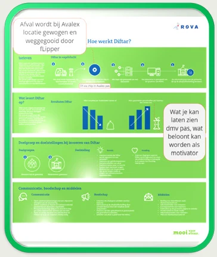
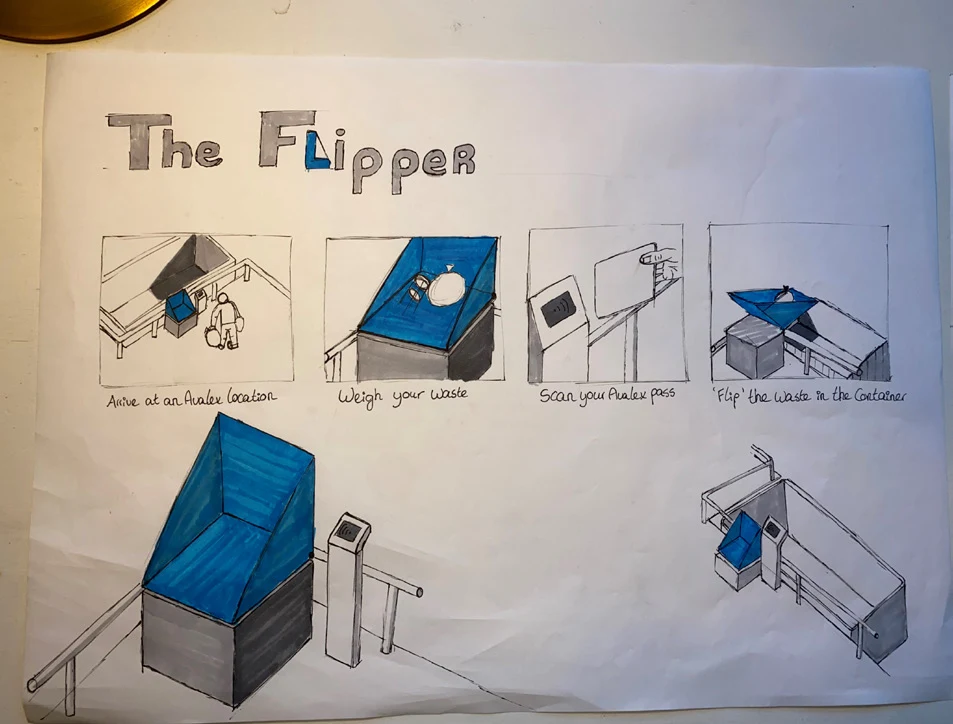
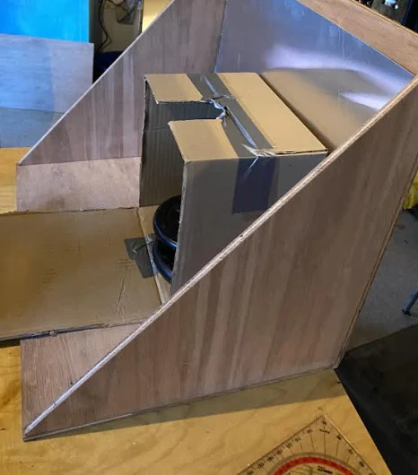

09 / Circular product & service design
The Flipper
A recycling-centre concept for Avalex that combines a low loading platform, automated waste disposal and personal feedback to encourage better waste separation.

Making separation meaningful
Avalex’s brief was to improve the appearance, usability and educational value of its existing recycling centres. Cultural research identified frustrations around information, attitudes towards waste, understanding personal impact and the effort of disposal. My proposal connects a physical disposal station with a digital service, making the consequences of separating waste more visible.
Customers place waste on the platform, then scan an NFC-enabled Avalex pass or choose an unregistered disposal. A shutter closes before the platform tips the waste into a closed container. The interface shows weight and estimated emissions savings; the proposed website adds material guides, recycling tutorials and personal feedback. A possible connection to the Diftar waste-tax system explores a financial incentive. Registration remains optional, with informed consent required before linking disposal data to a household.

Testing the physical experience
DINED body data informed a comparison between loading heights of 63 and 88 cm. Volunteers moved boxes with different sizes and loads from a simulated car boot to the platform. The lower height was preferred in 74.07% of test actions, rising to 77.78% with a 15 kg load. These findings informed the 63 cm loading platform, reducing the need to lift heavy items over a fence.
I also compared a lifting table with a rotating, triangular Flipper using a plywood prototype with an aluminium surface. Tests with wood, metal and cardboard at 5, 10 and 15 kg informed the mechanism choice: after rotating through 90 degrees, the Flipper needed less additional tilt to release the waste. The prototype surface differed from the proposed stainless steel, so further testing with final materials remained necessary.


Connecting product and service
The developed concept combines a stainless-steel weighing platform, supporting frame, rotation motor, shutter and green aluminium casing. A weatherproof touchscreen and NFC reader connect the disposal sequence to feedback. Closed containers direct waste through the Flipper, while the shutter separates the user from the tipping operation. The proposed weighing system resets after each cycle.
Concept development explored a conveyor belt and a container scale before refining the fixed Flipper. Compared with a conveyor, the selected direction required less space, was easier to clean and avoided waste rolling back towards the customer. The report also considered maintenance access, household-data protection, power supply and the effect of the installation on parking space.

A pilot before implementation
The proposal brings behavioural, ergonomic and technical research together in a product-service concept. Better separation, more useful material data and less lifting assistance are intended benefits; changes in customer behaviour and operating costs still require validation. The interface and complete feedback service had not yet been tested in use.
The detailed parts estimate totalled €4,805 per unit, with manufacturing, installation, electricity infrastructure and site adaptations requiring additional budget. My recommendation was to begin with a pilot: test customers’ responses to feedback and rewards, measure separation quality and assess the business case before wider installation. Material guides and tutorials could already be added to Avalex’s existing channels while the physical system was developed further.